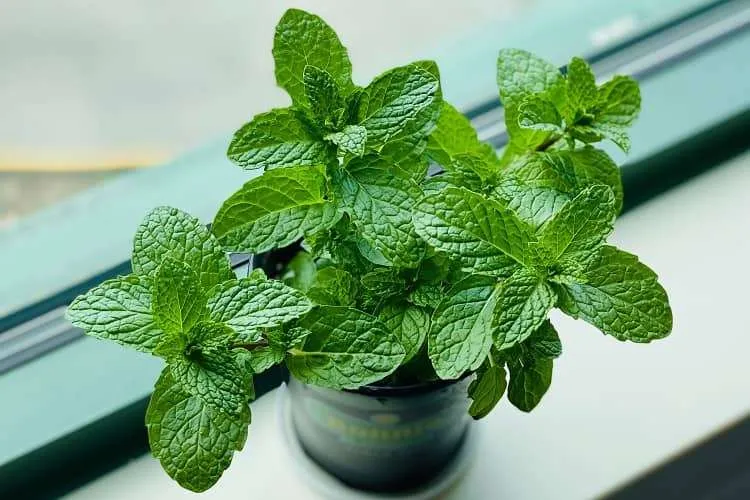
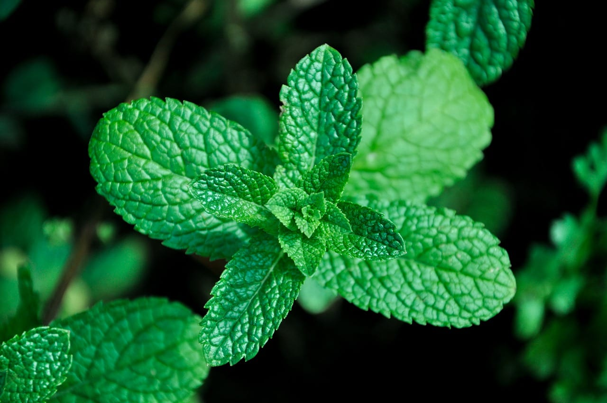
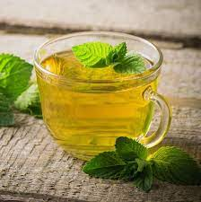
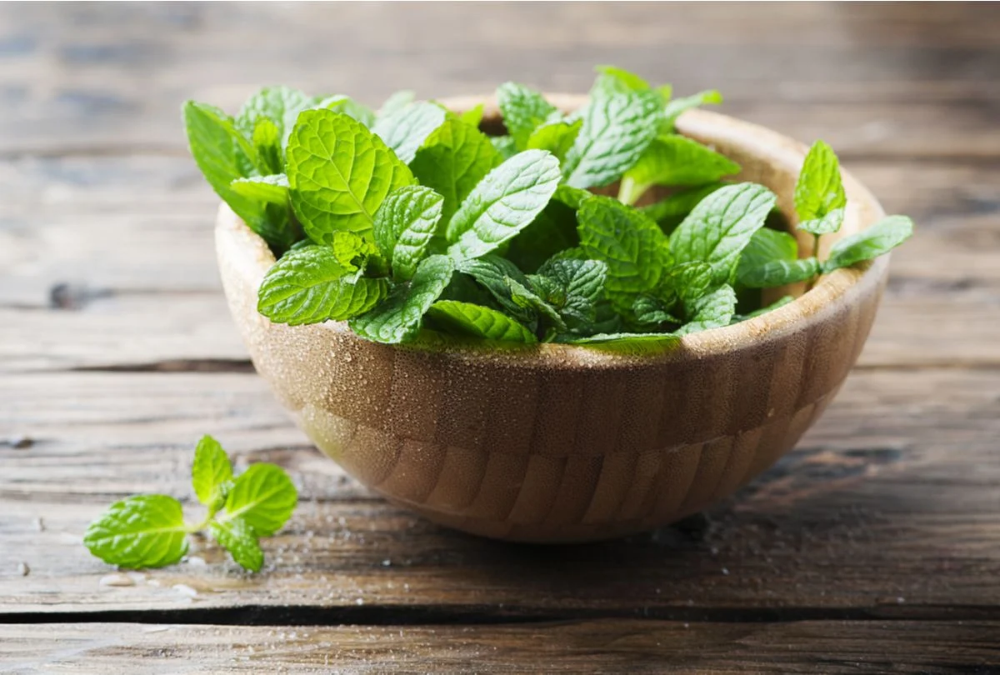
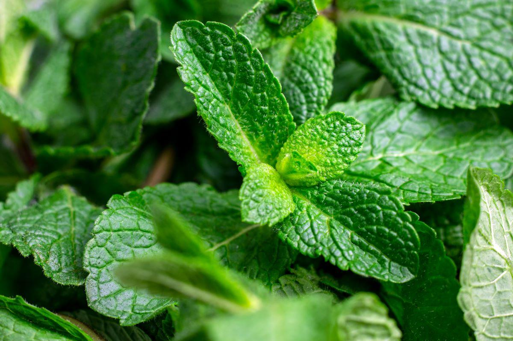

hortela
A hortelã, conhecida cientificamente como Mentha, é uma planta herbácea pertencente à família Lamiaceae. Essa erva aromática e refrescante é amplamente cultivada em todo o mundo e apreciada tanto por seu valor culinário quanto por suas propriedades medicinais. Com uma fragrância característica e um sabor refrescante, a hortelã é uma adição versátil à culinária e também é valorizada por suas propriedades terapêuticas.
Características e Variedades:
Folhas Verdejantes: A hortelã é reconhecida por suas folhas verdejantes, ovais e serrilhadas que crescem em caules ramificados.
Aroma Refrescante: Ao tocar ou esfregar suas folhas, a hortelã libera um aroma fresco e revigorante que é característico dessa planta.
Variedades Diversas: Existem várias espécies de hortelã, incluindo a hortelã-pimenta, a hortelã-verde, a hortelã-da-folha-miúda e outras, cada uma com suas nuances de sabor e aroma. Crescimento Rápido: A hortelã é conhecida por crescer vigorosamente e se espalhar facilmente por meio de rizomas subterrâneos, tornando-a uma planta perene e abundante.
Habitat e Cultivo:
Origem e Distribuição: A hortelã é nativa de regiões da Ásia e do Mediterrâneo, mas agora é amplamente cultivada em todo o mundo.
CcCultivo em Vasos ou Jardins: A hortelã pode ser cultivada tanto em vasos quanto em jardins, desde que haja exposição ao sol parcial e solo bem drenado..
Rega Adequada: As violetas preferem umidade constante, mas não devem ser encharcadas. A rega deve ser moderada para evitar o apodrecimento das raízes.
Rega e Drenagem: Essa planta prefere solo úmido, mas não encharcado, garantindo uma boa drenagem para evitar o apodrecimento das raízes.
Fertilização Ocasional:A hortelã pode se beneficiar de uma fertilização leve de tempos em tempos para promover um crescimento saudável.
Multiplicação Fácil:A propagação da hortelã pode ser feita por meio do plantio de mudas ou divisão de suas touceiras.
Usos e Aplicações:
Culinária e Bebidas: A hortelã é amplamente utilizada na culinária, dando um toque refrescante a pratos salgados, sobremesas e bebidas, como chás e coquetéis.
Chás Terapêuticos: Infusões de hortelã são valorizadas por suas propriedades digestivas, alívio de dores de cabeça e relaxamento.
Óleos Essenciais: A hortelã é destilada para produção de óleo essencial, que é amplamente usado em aromaterapia e produtos para cuidados pessoais.
Repelente Natural: O aroma da hortelã é conhecido por repelir insetos, tornando-a uma escolha natural para manter afastados mosquitos e outras pragas.
Benefícios Medicinais: A hortelã é conhecida por suas propriedades anti-inflamatórias, antioxidantes e antimicrobianas, podendo auxiliar no alívio de dores e problemas respiratórios.
Curiosidades
Lendas e Mitos: A hortelã é associada a várias lendas e mitos em diferentes culturas, sendo frequentemente considerada um símbolo de hospitalidade e boas-vindas.
Uso Tradicional: Ao longo da história, a hortelã tem sido usada para diversos fins medicinais e rituais, remontando aos tempos da Grécia Antiga e do Império Romano.
Conclusão: A hortelã é uma das plantas mais versáteis e populares do mundo, apreciada por suas propriedades aromáticas, sabor refrescante e benefícios terapêuticos. Seu cultivo é relativamente fácil, tornando-a uma escolha popular tanto para jardinagem doméstica quanto para uso culinário e medicinal. Com um toque de hortelã, é possível trazer frescor e sabor a uma infinidade de pratos e bebidas, além de desfrutar de seus benefícios para a saúde e bem-estar.